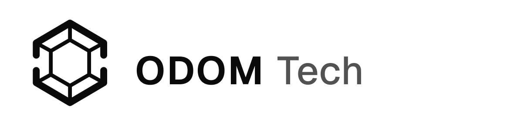

01
FilePilot
A local-first desktop app and CLI for scanning storage, finding duplicates, previewing file operations, and cleaning image metadata without uploads or accounts.

Independent product studio
ODOM Tech builds focused products, developer tools, commerce experiences, and the infrastructure that keeps them dependable.
Selected work
Public downloads and hosted demos are being prepared. Preview work is available for early conversations.
6 projects shown
A local-first desktop app and CLI for scanning storage, finding duplicates, previewing file operations, and cleaning image metadata without uploads or accounts.
A privacy-first Chrome extension that removes known tracking parameters and safely suspends inactive tabs—without accounts, analytics, telemetry, or a browsing-history database.
A simulated Alexa+ household-planning experience that uses Amazon Bedrock and Nova 2 Lite to turn competing constraints into a clear, assignable schedule.
Accessible, themeable React primitives for conversational prototypes, designed to remain provider-neutral.
A browser-based arcade built around quick-play games, player accounts, progression, and real-time play.
A custom storefront for handmade accessories with product browsing, Stripe-hosted checkout, and an order-fulfillment workflow.
Services
Focused engagements shaped around a real product, workflow, or operational problem.
Web, desktop, browser-extension, and mobile products taken from a clear scope through a working release.
Purpose-built tools, reusable components, command-line workflows, and practical internal systems.
Storefronts, customer workflows, managed integrations, and dependable application deployment.
Automation, service architecture, observability, security hardening, and recovery-minded systems.
About
ODOM Tech is an independent product studio built by Andrew Odom. The work spans privacy-first utilities, developer experiences, commerce systems, and the infrastructure behind them.
The approach is straightforward: define the useful core, choose careful defaults, ship maintainable software, and make ownership clear.
Start a conversation